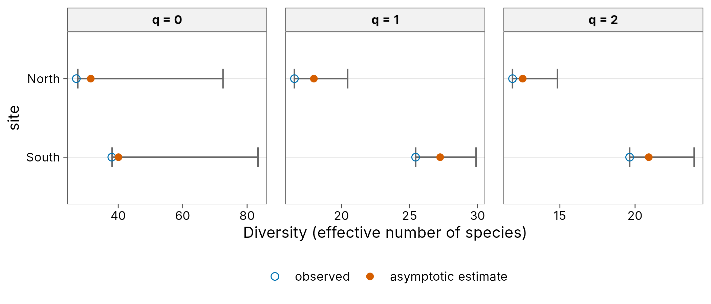
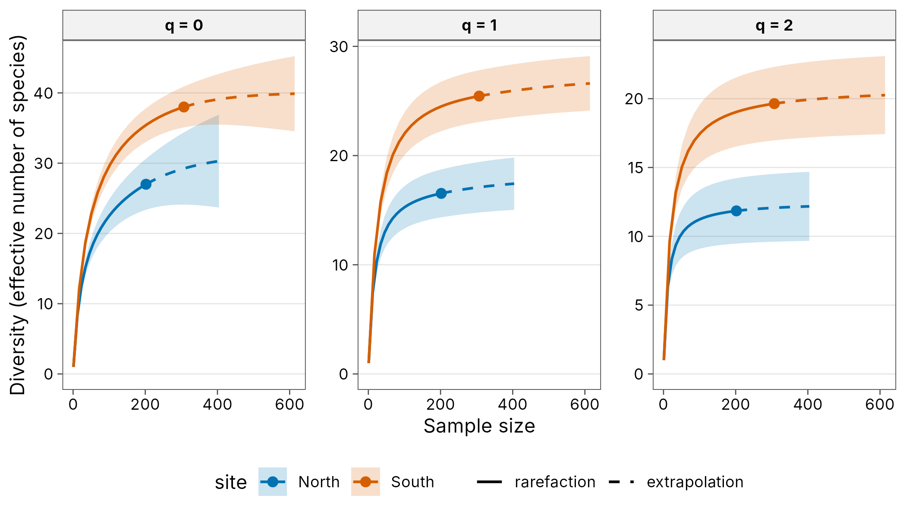
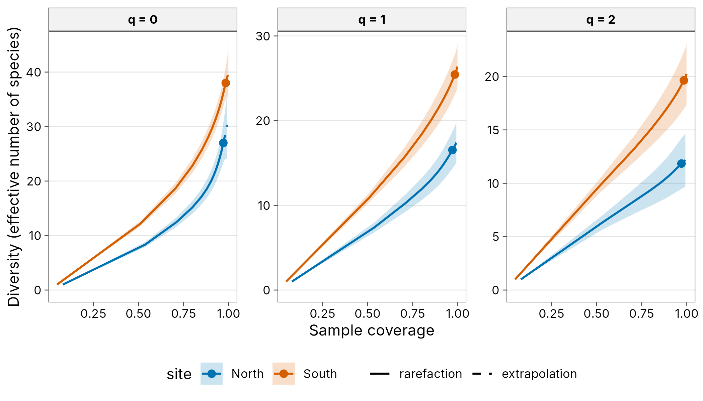
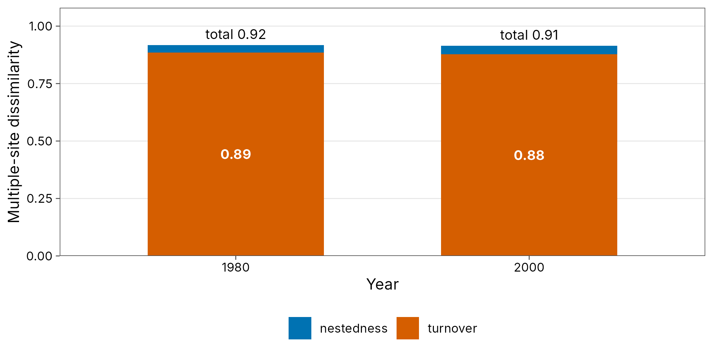
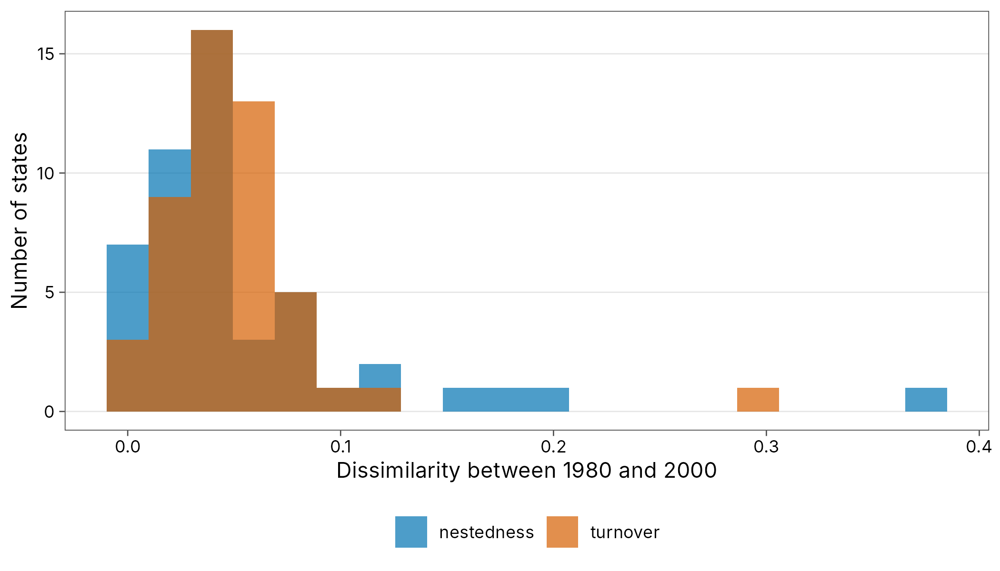

Case study: forest birds and North American bird communities
Source:vignettes/articles/case-birds.Rmd
case-birds.RmdTwo bird datasets cover the alpha and beta parts of the workflow.
Sources and licences.
-
birdin iNEXT (GPL-3 or later): counts of 41 species at a northern and a southern site in a Taiwanese forest, from Chao et al. (2014). -
bbs1980andbbs2000in betapart (GPL-2 or later): presence or absence of 569 breeding bird species in 49 states of the contiguous USA, from the North American Breeding Bird Survey (Sauer et al. 2011), as used by Baselga and Orme (2012).
Both are loaded from their packages at run time and are not redistributed with tidydiversity.
Alpha diversity at two forest sites
data(bird, package = "iNEXT")
birds <- tibble::tibble(
species = sprintf("sp%02d", seq_len(nrow(bird))),
North = bird$North.site,
South = bird$South.site
) |>
tidyr::pivot_longer(-species,
names_to = "site",
values_to = "abundance"
) |>
as_community()
div_coverage(birds)
#> # A tibble: 2 × 6
#> site n s_obs f1 f2 coverage
#> <chr> <int> <int> <int> <int> <dbl>
#> 1 North 202 27 6 4 0.970
#> 2 South 307 38 5 6 0.984Asymptotic estimates
These match iNEXT::iNEXT() to numerical precision (see
the package tests). The richness interval is the asymmetric log-normal
interval of Chao (1987), so it never falls below the observed
richness.
est <- div_estimate(birds, nboot = 200)
div_table(est, digits = 1, output = "kable")| site | Order q | Observed | Estimate [95% CI] |
|---|---|---|---|
| North | 0 | 27.0 | 31.5 [27.4, 72.5] |
| North | 1 | 16.5 | 18.0 [16.5, 20.4] |
| North | 2 | 11.8 | 12.5 [11.8, 14.8] |
| South | 0 | 38.0 | 40.1 [38.1, 83.4] |
| South | 1 | 25.4 | 27.3 [25.4, 29.9] |
| South | 2 | 19.6 | 20.9 [19.6, 23.9] |
autoplot(est)
Curves
curves <- div_rarefy(birds, nboot = 200)
autoplot(curves)
autoplot(curves, x = "coverage")
Beta diversity across the USA
data(bbsData, package = "betapart")
to_long <- function(m, year) {
community_long(
tibble::as_tibble(m, rownames = "site") |> mutate(year = year),
cols = -c(site, year)
)
}
bbs <- bind_rows(to_long(bbs1980, 1980), to_long(bbs2000, 2000))
bbs
#> # A community: 49 sites, 569 species, 16,582 individuals
#> year site species abundance
#> <dbl> <chr> <chr> <int>
#> 1 1980 AK 100 1
#> 2 1980 AK 110 1
#> 3 1980 AK 1230 1
#> 4 1980 AK 1290 1
#> 5 1980 AK 1300 1
#> 6 1980 AK 1320 1
#> 7 1980 AK 1350 1
#> 8 1980 AK 1370 1
#> 9 1980 AK 1390 1
#> 10 1980 AK 140 1
#> # ℹ 16,572 more rowsMultiple-site partitions
Sorensen dissimilarity among all 49 states, split into turnover (replacement of species) and nestedness (loss of species).
multi <- beta_multi(bbs, .by = year)
multi
#> # A tibble: 2 × 5
#> year n_sites turnover nestedness total
#> <dbl> <int> <dbl> <dbl> <dbl>
#> 1 1980 49 0.886 0.0325 0.918
#> 2 2000 49 0.878 0.0368 0.915
autoplot(multi, xlab = "Year")
Change in each state
Pairing each state with itself 20 years later gives the temporal beta diversity of each state.
temporal <- bbs |>
mutate(site = paste(site, year)) |>
beta_pair() |>
filter(sub(" .*", "", site_1) == sub(" .*", "", site_2)) |>
mutate(state = sub(" .*", "", site_1))
temporal |>
tidyr::pivot_longer(c(turnover, nestedness), names_to = "component") |>
ggplot(aes(value, fill = component)) +
geom_histogram(bins = 20, position = "identity", alpha = 0.7) +
scale_fill_tidydiversity() +
labs(
x = "Dissimilarity between 1980 and 2000", y = "Number of states",
fill = NULL
) +
theme_tidydiversity()
References
Baselga, A. and Orme, C. D. L. (2012). betapart: an R package for the study of beta diversity. Methods in Ecology and Evolution 3: 808-812.
Chao, A. (1987). Estimating the population size for capture-recapture data with unequal catchability. Biometrics 43: 783-791.
Chao, A., Gotelli, N. J., Hsieh, T. C., et al. (2014). Rarefaction and extrapolation with Hill numbers. Ecological Monographs 84: 45-67.
Sauer, J. R., Hines, J. E., Fallon, J. E., et al. (2011). The North American Breeding Bird Survey, results and analysis 1966-2009. USGS Patuxent Wildlife Research Center.